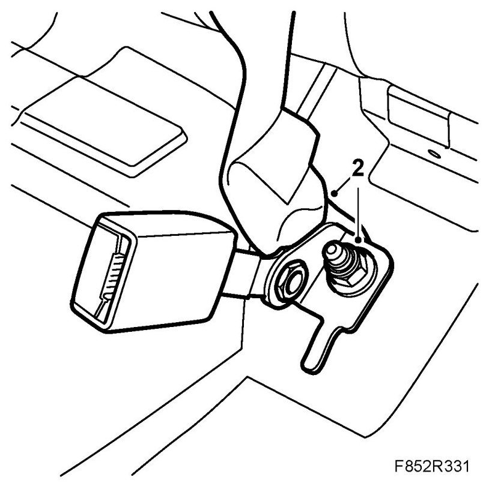
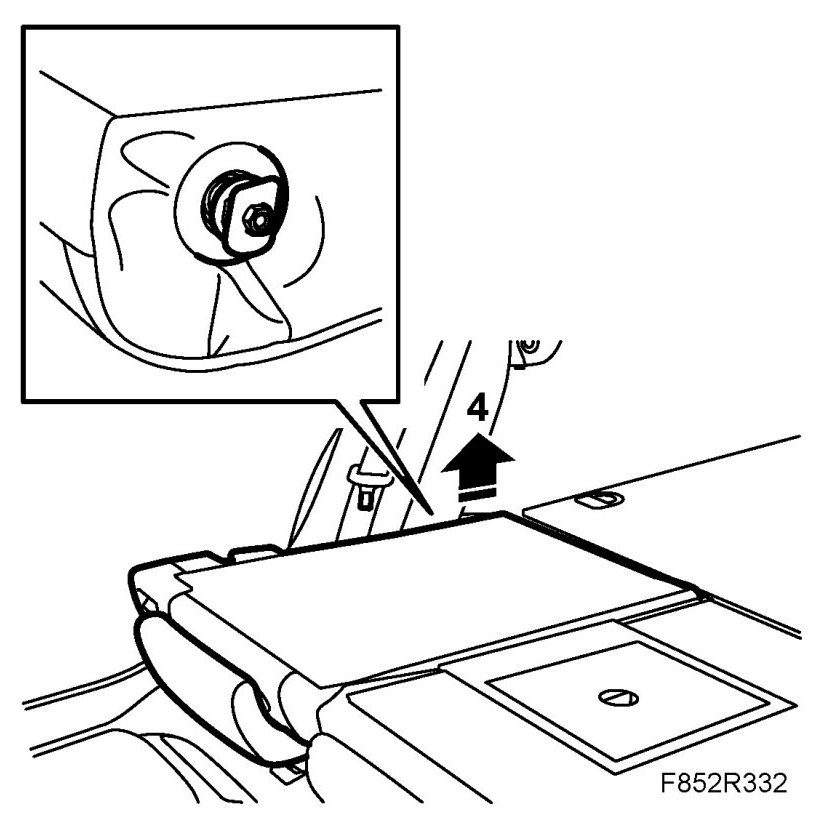
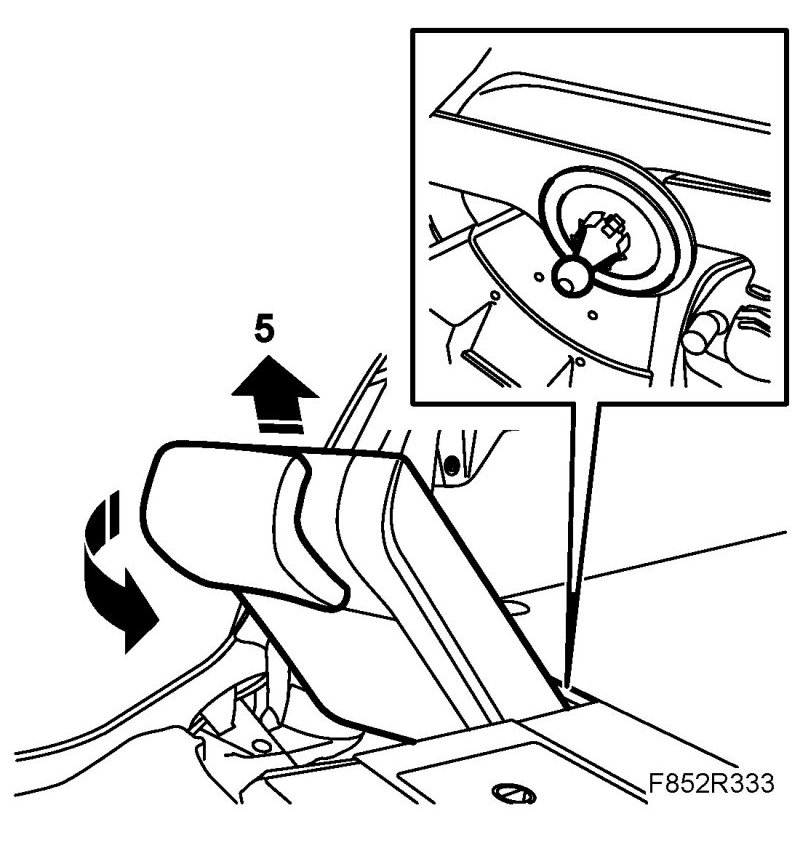
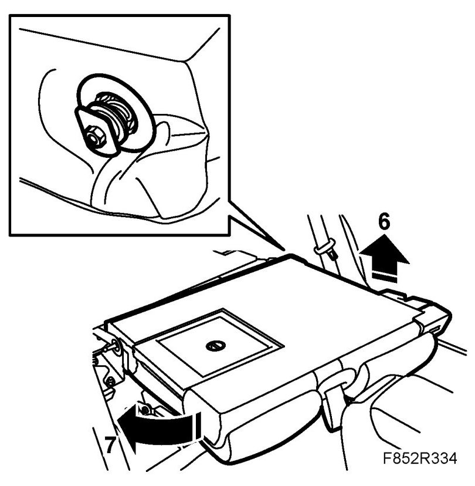
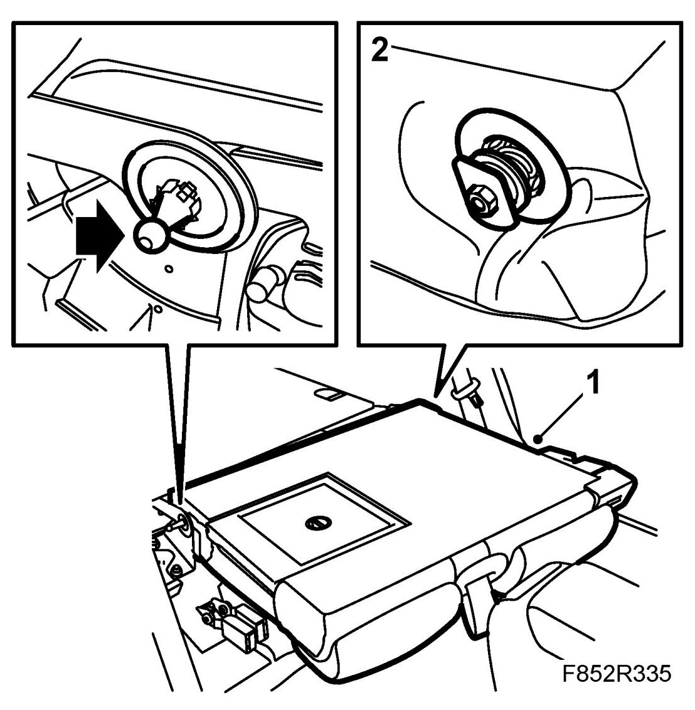
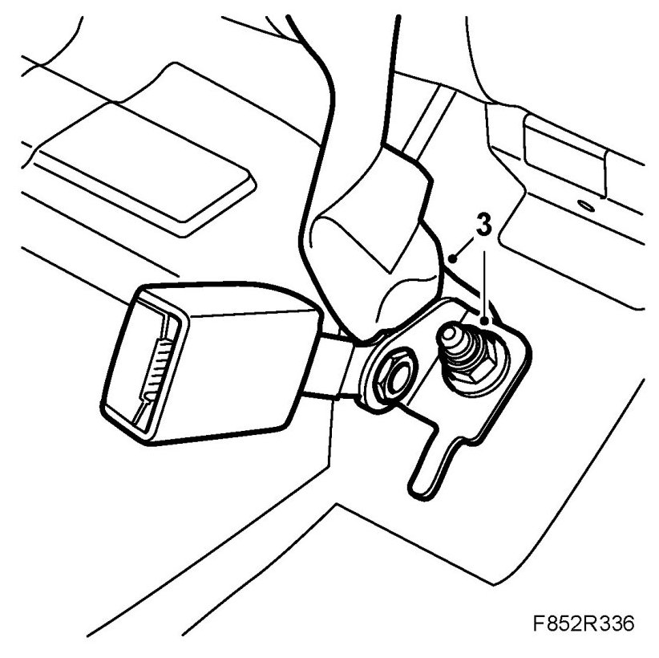
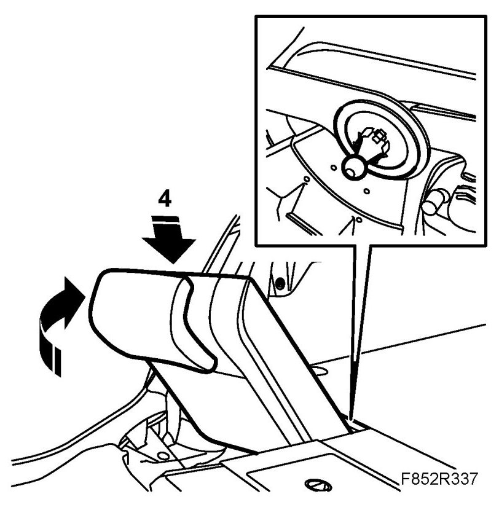

Rear Seat Backrest, 5D
Rear Seat Backrest, 5D
To remove
The 40% part of the backrest can be removed separately. The 40% part must first be removed to remove the 60% part.
1. Remove the rear seat cushion.
2. If the 60% backrest is to be removed: Remove the centre belt lower anchorage.

3. Tip forward the rear backrest.
4. Lift up the outer edge of the 40% backrest from its mounting.

NOTE: Take care with the side bolster. Press in the upholstery fabric while lifting up the backrest.
5. Angle the 40% backrest upwards/forwards so that it releases from the guide pin at the centre mounting and take out the backrest.

6. Lift up the outer edge of the 60% backrest from its mounting.

NOTE: Take care with the side bolster. Press in the upholstery fabric while lifting up the backrest.
7. Angle the 60% backrest upwards/forwards so that it releases from the guide pin at the centre mounting and take out the backrest.
To fit
1. Insert the locating pin on the 60% section into the centre mounting.

2. Fit the outer edge of the 60% backrest to its mounting and fold up the backrest.
3. Fit the belt centre anchorage and seat belt buckle.

NOTE:
- The seatbelt strap must not be twisted.
- Make sure the lock guide tongue is located in the recess in the floor.
Tightening torque 45 Nm (33 lbf ft)
4. Fit the 40% section of the backrest by fitting the lower inner part of the backrest over the locating pin.

5. Fit the outer edge of the 40% section into its mounting.
6. Make sure the backrest locks securely.
7. Fit the rear seat cushion.